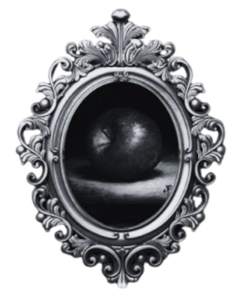

Raízes
do
Inefável
As crônicas de Welkarya - Livro 1
Adora L.
Nação da Água
Varendia
Nação do Fogo
Ashae
Nação do Ar
Everwin
Nação da terra
Shenuan
Playlist
Ouça a playlist de Raízes do Inefável no Spotify.

do
As crônicas de Welkarya - Livro 1
Adora L.
Ouça a playlist de Raízes do Inefável no Spotify.